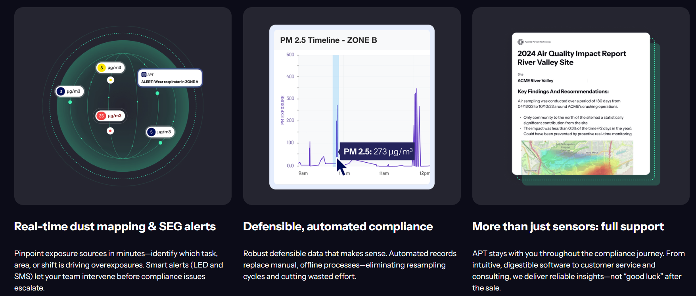

AIR QUALITY TECHNOLOGY
Applied Particle Technology
APT provides companies with tools to operate more effectively and responsibly, leading to cost savings, improved productivity, and enhanced health and safety.
Founded by Jiaxi Fang, Tandeep Chadha, and Pratim Biswas during their PhD studies at Washington University in St. Louis, APT was recognized in the Earth and Space Air Prize Competition for its air-quality sensor technology.
Visit company →